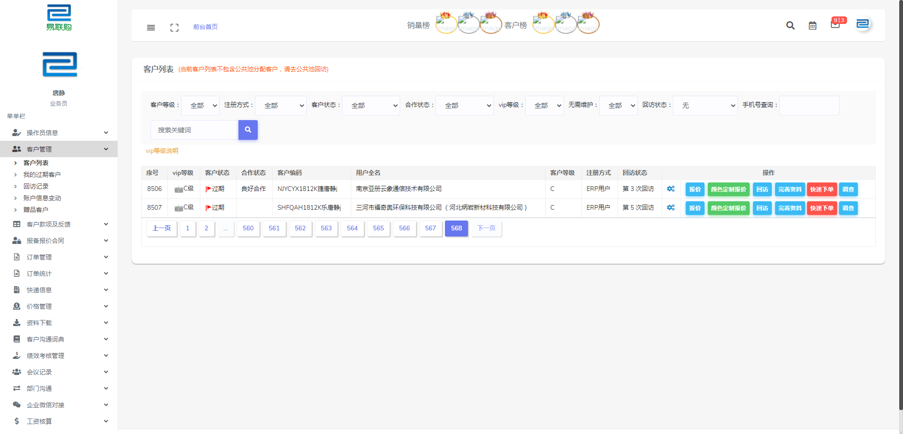

Report generated on 16-Aug-2021 at 14:34:31 by pytest-html v3.0.0
| JAVA_HOME | C:\Program Files\Java\jdk1.8.0_261 |
| Packages | {"pluggy": "0.13.1", "py": "1.10.0", "pytest": "6.1.2"} |
| Platform | Windows-7-6.1.7601-SP1 |
| Plugins | {"allure-pytest": "2.9.43", "assume": "2.4.3", "cov": "2.12.1", "forked": "1.3.0", "html": "3.0.0", "metadata": "1.11.0", "ordering": "0.6", "parallel": "0.1.0", "rerunfailures": "9.1.1", "xdist": "2.3.0"} |
| Python | 3.8.1 |
6 tests ran in 263.33 seconds.
(Un)check the boxes to filter the results.
5 passed, 0 skipped, 1 failed, 0 errors, 0 expected failures, 0 unexpected passes, 1 rerun| Result | Description | Test | Duration | Links |
|---|---|---|---|---|
| No results found. Try to check the filters | ||||
| Failed |
模拟点击客户列表或我的客户子菜单进入客户列表页： 1.点击最后一页最后的序号获取总记录数 2.查询当前员工所属客户总数 3.验证当前登录员工客户数
|
test_dir/test_customer.py::TestCustomer::test_customer_list_case | 77.05 | |
|
 self = <test_dir.test_customer.TestCustomer object at 0x000000000492FD30>, browser = <selenium.webdriver.chrome.webdriver.WebDriver (session="920d925c964bf91c197804ee1c2a11b1")>, base_url = 'http://newtest.elinkbuy.cn' def test_customer_list_case(self, browser, base_url): """ 模拟点击客户列表或我的客户子菜单进入客户列表页： 1.点击最后一页最后的序号获取总记录数 2.查询当前员工所属客户总数 3.验证当前登录员工客户数 """ self.login(browser, base_url) page = CustomerPage(browser) self.close_layer() # 关闭弹层 self.customer_menu() # 点击客户列表菜单 page.window_scroll(None, 1000) sleep(3) page.last_page.click() # 点击最后一页 sleep(3) total_text = int(page.last_sort.text) result = 0 db_conn = DB(ip='47.103.83.160', user='root', passwd='c587024e9ec3ea0a', db='ylg') user = self.get_user() sql = "select count(1) total from `xy_client` WHERE `staff_id` =" + str(user['staff_id']) + " and `clientkind` = 1 and `tradekindid` <> 2 and `closed` = 'F'" if user['roles_str'] in [87, 91]: sql = "select count(1) total from `xy_client` WHERE `staff_id` =" + str(user['staff_id']) + " and `clientkind` = 1 and `tradekindid` <> 2 and `closed` = 'F' and `high_quality` = 0" clients = db_conn.query(sql) if clients: result = clients[0]['total'] sleep(3) > assert result == total_text E assert 8508 == 8507 E +8508 E -8507 test_dir\test_customer.py:55: AssertionErrorself = <test_dir.test_customer.TestCustomer object at 0x0000000004ABB580>, browser = <selenium.webdriver.chrome.webdriver.WebDriver (session="920d925c964bf91c197804ee1c2a11b1")>, base_url = 'http://newtest.elinkbuy.cn' def test_customer_list_case(self, browser, base_url): """ 模拟点击客户列表或我的客户子菜单进入客户列表页： 1.点击最后一页最后的序号获取总记录数 2.查询当前员工所属客户总数 3.验证当前登录员工客户数 """ self.login(browser, base_url) page = CustomerPage(browser) self.close_layer() # 关闭弹层 self.customer_menu() # 点击客户列表菜单 page.window_scroll(None, 1000) sleep(3) page.last_page.click() # 点击最后一页 sleep(3) total_text = int(page.last_sort.text) result = 0 db_conn = DB(ip='47.103.83.160', user='root', passwd='c587024e9ec3ea0a', db='ylg') user = self.get_user() sql = "select count(1) total from `xy_client` WHERE `staff_id` =" + str(user['staff_id']) + " and `clientkind` = 1 and `tradekindid` <> 2 and `closed` = 'F'" if user['roles_str'] in [87, 91]: sql = "select count(1) total from `xy_client` WHERE `staff_id` =" + str(user['staff_id']) + " and `clientkind` = 1 and `tradekindid` <> 2 and `closed` = 'F' and `high_quality` = 0" clients = db_conn.query(sql) if clients: result = clients[0]['total'] sleep(3) > assert result == total_text E assert 8508 == 8507 E +8508 E -8507 test_dir\test_customer.py:55: AssertionError ------------------------------Captured stdout call------------------------------ 2021-08-16 14:30:11,668 INFO ✅ Find element: name=staff_name 2021-08-16 14:30:13,025 INFO 🖋 input element: 登录用户名 2021-08-16 14:30:13,085 INFO ✅ Find element: name=password 2021-08-16 14:30:14,023 INFO 🖋 input element: 登录密码 2021-08-16 14:30:14,141 INFO ✅ Find element: css selector=.card-body>form>div.form-group>button.btn 2021-08-16 14:30:15,103 INFO 🖱 click element: 登录按钮 2021-08-16 14:30:31,118 INFO ✨ Find 7 elements through: class_name=layui-m-layer, describe:layer弹窗 2021-08-16 14:30:31,141 INFO ✨ Find 7 elements through: class_name=layui-m-layershade, describe:layer弹窗蒙层 2021-08-16 14:30:31,244 INFO ✅ Find element: id=pytestCustomerMenu 2021-08-16 14:30:32,209 INFO 🖱 click element: 客户管理菜单栏 2021-08-16 14:30:32,335 INFO ✅ Find element: id=pytestCustomerList 2021-08-16 14:30:33,279 INFO 🖱 click element: 客户列表/我的客户菜单 2021-08-16 14:30:39,960 INFO ✅ Find element: xpath=//td[@id='pytestCustomerListPage']/ul[@class='pagination']/li[last()-1] 2021-08-16 14:30:40,936 INFO 🖱 click element: 最后一页 2021-08-16 14:30:45,703 INFO ✅ Find element: xpath=//div[@class='table-responsive']/table/tbody[@id='content']/tr[last()]/td[@id='pytestCustomerListSort'] -------------------------------Captured log call-------------------------------- INFO poium:logging.py:18 INFO ✅ Find element: name=staff_name INFO poium:logging.py:18 INFO 🖋 input element: 登录用户名 INFO poium:logging.py:18 INFO ✅ Find element: name=password INFO poium:logging.py:18 INFO 🖋 input element: 登录密码 INFO poium:logging.py:18 INFO ✅ Find element: css selector=.card-body>form>div.form-group>button.btn INFO poium:logging.py:18 INFO 🖱 click element: 登录按钮 INFO poium:logging.py:18 INFO ✨ Find 7 elements through: class_name=layui-m-layer, describe:layer弹窗 INFO poium:logging.py:18 INFO ✨ Find 7 elements through: class_name=layui-m-layershade, describe:layer弹窗蒙层 INFO poium:logging.py:18 INFO ✅ Find element: id=pytestCustomerMenu INFO poium:logging.py:18 INFO 🖱 click element: 客户管理菜单栏 INFO poium:logging.py:18 INFO ✅ Find element: id=pytestCustomerList INFO poium:logging.py:18 INFO 🖱 click element: 客户列表/我的客户菜单 INFO poium:logging.py:18 INFO ✅ Find element: xpath=//td[@id='pytestCustomerListPage']/ul[@class='pagination']/li[last()-1] INFO poium:logging.py:18 INFO 🖱 click element: 最后一页 INFO poium:logging.py:18 INFO ✅ Find element: xpath=//div[@class='table-responsive']/table/tbody[@id='content']/tr[last()]/td[@id='pytestCustomerListSort'] ------------------------------Captured stdout call------------------------------ 2021-08-16 14:31:07,900 INFO ✨ Find 7 elements through: class_name=layui-m-layer, describe:layer弹窗 2021-08-16 14:31:07,927 INFO ✨ Find 7 elements through: class_name=layui-m-layershade, describe:layer弹窗蒙层 2021-08-16 14:31:08,049 INFO ✅ Find element: id=pytestCustomerMenu 2021-08-16 14:31:09,000 INFO 🖱 click element: 客户管理菜单栏 2021-08-16 14:31:09,079 INFO ✅ Find element: id=pytestCustomerList 2021-08-16 14:31:10,025 INFO 🖱 click element: 客户列表/我的客户菜单 2021-08-16 14:31:16,561 INFO ✅ Find element: xpath=//td[@id='pytestCustomerListPage']/ul[@class='pagination']/li[last()-1] 2021-08-16 14:31:17,544 INFO 🖱 click element: 最后一页 2021-08-16 14:31:22,302 INFO ✅ Find element: xpath=//div[@class='table-responsive']/table/tbody[@id='content']/tr[last()]/td[@id='pytestCustomerListSort'] -------------------------------Captured log call-------------------------------- INFO poium:logging.py:18 INFO ✨ Find 7 elements through: class_name=layui-m-layer, describe:layer弹窗 INFO poium:logging.py:18 INFO ✨ Find 7 elements through: class_name=layui-m-layershade, describe:layer弹窗蒙层 INFO poium:logging.py:18 INFO ✅ Find element: id=pytestCustomerMenu INFO poium:logging.py:18 INFO 🖱 click element: 客户管理菜单栏 INFO poium:logging.py:18 INFO ✅ Find element: id=pytestCustomerList INFO poium:logging.py:18 INFO 🖱 click element: 客户列表/我的客户菜单 INFO poium:logging.py:18 INFO ✅ Find element: xpath=//td[@id='pytestCustomerListPage']/ul[@class='pagination']/li[last()-1] INFO poium:logging.py:18 INFO 🖱 click element: 最后一页 INFO poium:logging.py:18 INFO ✅ Find element: xpath=//div[@class='table-responsive']/table/tbody[@id='content']/tr[last()]/td[@id='pytestCustomerListSort'] | ||||
| Rerun | 模拟点击客户列表或我的客户子菜单进入客户列表页： 1.点击最后一页最后的序号获取总记录数 2.查询当前员工所属客户总数 3.验证当前登录员工客户数 | test_dir/test_customer.py::TestCustomer::test_customer_list_case | 38.88 | |
|
self = <test_dir.test_customer.TestCustomer object at 0x000000000492FD30>, browser = <selenium.webdriver.chrome.webdriver.WebDriver (session="920d925c964bf91c197804ee1c2a11b1")>, base_url = 'http://newtest.elinkbuy.cn' def test_customer_list_case(self, browser, base_url): """ 模拟点击客户列表或我的客户子菜单进入客户列表页： 1.点击最后一页最后的序号获取总记录数 2.查询当前员工所属客户总数 3.验证当前登录员工客户数 """ self.login(browser, base_url) page = CustomerPage(browser) self.close_layer() # 关闭弹层 self.customer_menu() # 点击客户列表菜单 page.window_scroll(None, 1000) sleep(3) page.last_page.click() # 点击最后一页 sleep(3) total_text = int(page.last_sort.text) result = 0 db_conn = DB(ip='47.103.83.160', user='root', passwd='c587024e9ec3ea0a', db='ylg') user = self.get_user() sql = "select count(1) total from `xy_client` WHERE `staff_id` =" + str(user['staff_id']) + " and `clientkind` = 1 and `tradekindid` <> 2 and `closed` = 'F'" if user['roles_str'] in [87, 91]: sql = "select count(1) total from `xy_client` WHERE `staff_id` =" + str(user['staff_id']) + " and `clientkind` = 1 and `tradekindid` <> 2 and `closed` = 'F' and `high_quality` = 0" clients = db_conn.query(sql) if clients: result = clients[0]['total'] sleep(3) > assert result == total_text E assert 8508 == 8507 E +8508 E -8507 test_dir\test_customer.py:55: AssertionError ------------------------------Captured stdout call------------------------------ 2021-08-16 14:30:11,668 INFO ✅ Find element: name=staff_name 2021-08-16 14:30:13,025 INFO 🖋 input element: 登录用户名 2021-08-16 14:30:13,085 INFO ✅ Find element: name=password 2021-08-16 14:30:14,023 INFO 🖋 input element: 登录密码 2021-08-16 14:30:14,141 INFO ✅ Find element: css selector=.card-body>form>div.form-group>button.btn 2021-08-16 14:30:15,103 INFO 🖱 click element: 登录按钮 2021-08-16 14:30:31,118 INFO ✨ Find 7 elements through: class_name=layui-m-layer, describe:layer弹窗 2021-08-16 14:30:31,141 INFO ✨ Find 7 elements through: class_name=layui-m-layershade, describe:layer弹窗蒙层 2021-08-16 14:30:31,244 INFO ✅ Find element: id=pytestCustomerMenu 2021-08-16 14:30:32,209 INFO 🖱 click element: 客户管理菜单栏 2021-08-16 14:30:32,335 INFO ✅ Find element: id=pytestCustomerList 2021-08-16 14:30:33,279 INFO 🖱 click element: 客户列表/我的客户菜单 2021-08-16 14:30:39,960 INFO ✅ Find element: xpath=//td[@id='pytestCustomerListPage']/ul[@class='pagination']/li[last()-1] 2021-08-16 14:30:40,936 INFO 🖱 click element: 最后一页 2021-08-16 14:30:45,703 INFO ✅ Find element: xpath=//div[@class='table-responsive']/table/tbody[@id='content']/tr[last()]/td[@id='pytestCustomerListSort'] -------------------------------Captured log call-------------------------------- INFO poium:logging.py:18 INFO ✅ Find element: name=staff_name INFO poium:logging.py:18 INFO 🖋 input element: 登录用户名 INFO poium:logging.py:18 INFO ✅ Find element: name=password INFO poium:logging.py:18 INFO 🖋 input element: 登录密码 INFO poium:logging.py:18 INFO ✅ Find element: css selector=.card-body>form>div.form-group>button.btn INFO poium:logging.py:18 INFO 🖱 click element: 登录按钮 INFO poium:logging.py:18 INFO ✨ Find 7 elements through: class_name=layui-m-layer, describe:layer弹窗 INFO poium:logging.py:18 INFO ✨ Find 7 elements through: class_name=layui-m-layershade, describe:layer弹窗蒙层 INFO poium:logging.py:18 INFO ✅ Find element: id=pytestCustomerMenu INFO poium:logging.py:18 INFO 🖱 click element: 客户管理菜单栏 INFO poium:logging.py:18 INFO ✅ Find element: id=pytestCustomerList INFO poium:logging.py:18 INFO 🖱 click element: 客户列表/我的客户菜单 INFO poium:logging.py:18 INFO ✅ Find element: xpath=//td[@id='pytestCustomerListPage']/ul[@class='pagination']/li[last()-1] INFO poium:logging.py:18 INFO 🖱 click element: 最后一页 INFO poium:logging.py:18 INFO ✅ Find element: xpath=//div[@class='table-responsive']/table/tbody[@id='content']/tr[last()]/td[@id='pytestCustomerListSort'] | ||||
| Passed |
模拟点击客户等级下拉框筛选客户 1.点击客户等级下拉框 2.选择筛选等级 3.点击搜索按钮
|
test_dir/test_customer.py::TestCustomer::test_customer_rank_case[A] | 37.85 | |
|
------------------------------Captured stdout call------------------------------ 2021-08-16 14:31:44,113 INFO ✨ Find 7 elements through: class_name=layui-m-layer, describe:layer弹窗 2021-08-16 14:31:44,135 INFO ✨ Find 7 elements through: class_name=layui-m-layershade, describe:layer弹窗蒙层 2021-08-16 14:31:44,230 INFO ✅ Find element: id=pytestCustomerMenu 2021-08-16 14:31:45,233 INFO 🖱 click element: 客户管理菜单栏 2021-08-16 14:31:45,294 INFO ✅ Find element: id=pytestCustomerList 2021-08-16 14:31:46,251 INFO 🖱 click element: 客户列表/我的客户菜单 2021-08-16 14:31:49,769 INFO ✅ Find element: name=search_client_rank 2021-08-16 14:31:51,099 INFO ✅ Find element: id=pytestCustomerSearchBtn 2021-08-16 14:31:52,060 INFO 🖱 click element: 搜索按钮 2021-08-16 14:32:01,507 INFO ✨ Find 0 elements through: xpath=//td[@id='pytestCustomerListPage']/ul[@class='pagination']/li, describe:分页 2021-08-16 14:32:01,534 INFO ✅ Find element: xpath=//div[@class='table-responsive']/table/tbody[@id='content']/tr[last()]/td[@id='pytestCustomerListSort'] -------------------------------Captured log call-------------------------------- INFO poium:logging.py:18 INFO ✨ Find 7 elements through: class_name=layui-m-layer, describe:layer弹窗 INFO poium:logging.py:18 INFO ✨ Find 7 elements through: class_name=layui-m-layershade, describe:layer弹窗蒙层 INFO poium:logging.py:18 INFO ✅ Find element: id=pytestCustomerMenu INFO poium:logging.py:18 INFO 🖱 click element: 客户管理菜单栏 INFO poium:logging.py:18 INFO ✅ Find element: id=pytestCustomerList INFO poium:logging.py:18 INFO 🖱 click element: 客户列表/我的客户菜单 INFO poium:logging.py:18 INFO ✅ Find element: name=search_client_rank INFO poium:logging.py:18 INFO ✅ Find element: id=pytestCustomerSearchBtn INFO poium:logging.py:18 INFO 🖱 click element: 搜索按钮 INFO poium:logging.py:18 INFO ✨ Find 0 elements through: xpath=//td[@id='pytestCustomerListPage']/ul[@class='pagination']/li, describe:分页 INFO poium:logging.py:18 INFO ✅ Find element: xpath=//div[@class='table-responsive']/table/tbody[@id='content']/tr[last()]/td[@id='pytestCustomerListSort'] | ||||
| Passed |
模拟点击客户等级下拉框筛选客户 1.点击客户等级下拉框 2.选择筛选等级 3.点击搜索按钮
|
test_dir/test_customer.py::TestCustomer::test_customer_rank_case[B] | 38.12 | |
|
------------------------------Captured stdout call------------------------------ 2021-08-16 14:32:22,023 INFO ✨ Find 7 elements through: class_name=layui-m-layer, describe:layer弹窗 2021-08-16 14:32:22,049 INFO ✨ Find 7 elements through: class_name=layui-m-layershade, describe:layer弹窗蒙层 2021-08-16 14:32:22,151 INFO ✅ Find element: id=pytestCustomerMenu 2021-08-16 14:32:23,135 INFO 🖱 click element: 客户管理菜单栏 2021-08-16 14:32:23,192 INFO ✅ Find element: id=pytestCustomerList 2021-08-16 14:32:24,135 INFO 🖱 click element: 客户列表/我的客户菜单 2021-08-16 14:32:27,559 INFO ✅ Find element: name=search_client_rank 2021-08-16 14:32:28,884 INFO ✅ Find element: id=pytestCustomerSearchBtn 2021-08-16 14:32:29,858 INFO 🖱 click element: 搜索按钮 2021-08-16 14:32:34,804 INFO ✨ Find 13 elements through: xpath=//td[@id='pytestCustomerListPage']/ul[@class='pagination']/li, describe:分页 2021-08-16 14:32:34,832 INFO ✅ Find element: xpath=//td[@id='pytestCustomerListPage']/ul[@class='pagination']/li[last()-1] 2021-08-16 14:32:35,807 INFO 🖱 click element: 最后一页 2021-08-16 14:32:39,550 INFO ✅ Find element: xpath=//div[@class='table-responsive']/table/tbody[@id='content']/tr[last()]/td[@id='pytestCustomerListSort'] -------------------------------Captured log call-------------------------------- INFO poium:logging.py:18 INFO ✨ Find 7 elements through: class_name=layui-m-layer, describe:layer弹窗 INFO poium:logging.py:18 INFO ✨ Find 7 elements through: class_name=layui-m-layershade, describe:layer弹窗蒙层 INFO poium:logging.py:18 INFO ✅ Find element: id=pytestCustomerMenu INFO poium:logging.py:18 INFO 🖱 click element: 客户管理菜单栏 INFO poium:logging.py:18 INFO ✅ Find element: id=pytestCustomerList INFO poium:logging.py:18 INFO 🖱 click element: 客户列表/我的客户菜单 INFO poium:logging.py:18 INFO ✅ Find element: name=search_client_rank INFO poium:logging.py:18 INFO ✅ Find element: id=pytestCustomerSearchBtn INFO poium:logging.py:18 INFO 🖱 click element: 搜索按钮 INFO poium:logging.py:18 INFO ✨ Find 13 elements through: xpath=//td[@id='pytestCustomerListPage']/ul[@class='pagination']/li, describe:分页 INFO poium:logging.py:18 INFO ✅ Find element: xpath=//td[@id='pytestCustomerListPage']/ul[@class='pagination']/li[last()-1] INFO poium:logging.py:18 INFO 🖱 click element: 最后一页 INFO poium:logging.py:18 INFO ✅ Find element: xpath=//div[@class='table-responsive']/table/tbody[@id='content']/tr[last()]/td[@id='pytestCustomerListSort'] | ||||
| Passed |
模拟点击客户等级下拉框筛选客户 1.点击客户等级下拉框 2.选择筛选等级 3.点击搜索按钮
|
test_dir/test_customer.py::TestCustomer::test_customer_rank_case[C] | 38.61 | |
|
------------------------------Captured stdout call------------------------------ 2021-08-16 14:33:00,048 INFO ✨ Find 7 elements through: class_name=layui-m-layer, describe:layer弹窗 2021-08-16 14:33:00,070 INFO ✨ Find 7 elements through: class_name=layui-m-layershade, describe:layer弹窗蒙层 2021-08-16 14:33:00,164 INFO ✅ Find element: id=pytestCustomerMenu 2021-08-16 14:33:01,123 INFO 🖱 click element: 客户管理菜单栏 2021-08-16 14:33:01,230 INFO ✅ Find element: id=pytestCustomerList 2021-08-16 14:33:02,177 INFO 🖱 click element: 客户列表/我的客户菜单 2021-08-16 14:33:05,690 INFO ✅ Find element: name=search_client_rank 2021-08-16 14:33:07,011 INFO ✅ Find element: id=pytestCustomerSearchBtn 2021-08-16 14:33:07,983 INFO 🖱 click element: 搜索按钮 2021-08-16 14:33:13,377 INFO ✨ Find 13 elements through: xpath=//td[@id='pytestCustomerListPage']/ul[@class='pagination']/li, describe:分页 2021-08-16 14:33:13,393 INFO ✅ Find element: xpath=//td[@id='pytestCustomerListPage']/ul[@class='pagination']/li[last()-1] 2021-08-16 14:33:14,371 INFO 🖱 click element: 最后一页 2021-08-16 14:33:18,302 INFO ✅ Find element: xpath=//div[@class='table-responsive']/table/tbody[@id='content']/tr[last()]/td[@id='pytestCustomerListSort'] -------------------------------Captured log call-------------------------------- INFO poium:logging.py:18 INFO ✨ Find 7 elements through: class_name=layui-m-layer, describe:layer弹窗 INFO poium:logging.py:18 INFO ✨ Find 7 elements through: class_name=layui-m-layershade, describe:layer弹窗蒙层 INFO poium:logging.py:18 INFO ✅ Find element: id=pytestCustomerMenu INFO poium:logging.py:18 INFO 🖱 click element: 客户管理菜单栏 INFO poium:logging.py:18 INFO ✅ Find element: id=pytestCustomerList INFO poium:logging.py:18 INFO 🖱 click element: 客户列表/我的客户菜单 INFO poium:logging.py:18 INFO ✅ Find element: name=search_client_rank INFO poium:logging.py:18 INFO ✅ Find element: id=pytestCustomerSearchBtn INFO poium:logging.py:18 INFO 🖱 click element: 搜索按钮 INFO poium:logging.py:18 INFO ✨ Find 13 elements through: xpath=//td[@id='pytestCustomerListPage']/ul[@class='pagination']/li, describe:分页 INFO poium:logging.py:18 INFO ✅ Find element: xpath=//td[@id='pytestCustomerListPage']/ul[@class='pagination']/li[last()-1] INFO poium:logging.py:18 INFO 🖱 click element: 最后一页 INFO poium:logging.py:18 INFO ✅ Find element: xpath=//div[@class='table-responsive']/table/tbody[@id='content']/tr[last()]/td[@id='pytestCustomerListSort'] | ||||
| Passed |
模拟点击客户等级下拉框筛选客户 1.点击客户等级下拉框 2.选择筛选等级 3.点击搜索按钮
|
test_dir/test_customer.py::TestCustomer::test_customer_rank_case[D] | 38.52 | |
|
------------------------------Captured stdout call------------------------------ 2021-08-16 14:33:38,927 INFO ✨ Find 7 elements through: class_name=layui-m-layer, describe:layer弹窗 2021-08-16 14:33:38,955 INFO ✨ Find 7 elements through: class_name=layui-m-layershade, describe:layer弹窗蒙层 2021-08-16 14:33:39,054 INFO ✅ Find element: id=pytestCustomerMenu 2021-08-16 14:33:40,049 INFO 🖱 click element: 客户管理菜单栏 2021-08-16 14:33:40,099 INFO ✅ Find element: id=pytestCustomerList 2021-08-16 14:33:41,051 INFO 🖱 click element: 客户列表/我的客户菜单 2021-08-16 14:33:44,464 INFO ✅ Find element: name=search_client_rank 2021-08-16 14:33:45,791 INFO ✅ Find element: id=pytestCustomerSearchBtn 2021-08-16 14:33:46,728 INFO 🖱 click element: 搜索按钮 2021-08-16 14:33:51,001 INFO ✨ Find 13 elements through: xpath=//td[@id='pytestCustomerListPage']/ul[@class='pagination']/li, describe:分页 2021-08-16 14:33:51,024 INFO ✅ Find element: xpath=//td[@id='pytestCustomerListPage']/ul[@class='pagination']/li[last()-1] 2021-08-16 14:33:52,000 INFO 🖱 click element: 最后一页 2021-08-16 14:33:56,807 INFO ✅ Find element: xpath=//div[@class='table-responsive']/table/tbody[@id='content']/tr[last()]/td[@id='pytestCustomerListSort'] -------------------------------Captured log call-------------------------------- INFO poium:logging.py:18 INFO ✨ Find 7 elements through: class_name=layui-m-layer, describe:layer弹窗 INFO poium:logging.py:18 INFO ✨ Find 7 elements through: class_name=layui-m-layershade, describe:layer弹窗蒙层 INFO poium:logging.py:18 INFO ✅ Find element: id=pytestCustomerMenu INFO poium:logging.py:18 INFO 🖱 click element: 客户管理菜单栏 INFO poium:logging.py:18 INFO ✅ Find element: id=pytestCustomerList INFO poium:logging.py:18 INFO 🖱 click element: 客户列表/我的客户菜单 INFO poium:logging.py:18 INFO ✅ Find element: name=search_client_rank INFO poium:logging.py:18 INFO ✅ Find element: id=pytestCustomerSearchBtn INFO poium:logging.py:18 INFO 🖱 click element: 搜索按钮 INFO poium:logging.py:18 INFO ✨ Find 13 elements through: xpath=//td[@id='pytestCustomerListPage']/ul[@class='pagination']/li, describe:分页 INFO poium:logging.py:18 INFO ✅ Find element: xpath=//td[@id='pytestCustomerListPage']/ul[@class='pagination']/li[last()-1] INFO poium:logging.py:18 INFO 🖱 click element: 最后一页 INFO poium:logging.py:18 INFO ✅ Find element: xpath=//div[@class='table-responsive']/table/tbody[@id='content']/tr[last()]/td[@id='pytestCustomerListSort'] | ||||
| Passed |
模拟修改客户资料功能验证：
|
test_dir/test_customer.py::TestCustomer::test_customer_info_update_case | 31.51 | |
|
------------------------------Captured stdout call------------------------------ 2021-08-16 14:34:17,322 INFO ✨ Find 7 elements through: class_name=layui-m-layer, describe:layer弹窗 2021-08-16 14:34:17,345 INFO ✨ Find 7 elements through: class_name=layui-m-layershade, describe:layer弹窗蒙层 2021-08-16 14:34:17,439 INFO ✅ Find element: id=pytestCustomerMenu 2021-08-16 14:34:18,401 INFO 🖱 click element: 客户管理菜单栏 2021-08-16 14:34:18,486 INFO ✅ Find element: id=pytestCustomerList 2021-08-16 14:34:19,450 INFO 🖱 click element: 客户列表/我的客户菜单 2021-08-16 14:34:24,776 INFO ✅ Find element: xpath=//div[@class='table-responsive']/table/tbody[@id='content']/tr[1]/td[last()]/a[@id='pytestEditCustomerBtn'] 2021-08-16 14:34:25,753 INFO 🖱 click element: 完善资料按钮 -------------------------------Captured log call-------------------------------- INFO poium:logging.py:18 INFO ✨ Find 7 elements through: class_name=layui-m-layer, describe:layer弹窗 INFO poium:logging.py:18 INFO ✨ Find 7 elements through: class_name=layui-m-layershade, describe:layer弹窗蒙层 INFO poium:logging.py:18 INFO ✅ Find element: id=pytestCustomerMenu INFO poium:logging.py:18 INFO 🖱 click element: 客户管理菜单栏 INFO poium:logging.py:18 INFO ✅ Find element: id=pytestCustomerList INFO poium:logging.py:18 INFO 🖱 click element: 客户列表/我的客户菜单 INFO poium:logging.py:18 INFO ✅ Find element: xpath=//div[@class='table-responsive']/table/tbody[@id='content']/tr[1]/td[last()]/a[@id='pytestEditCustomerBtn'] INFO poium:logging.py:18 INFO 🖱 click element: 完善资料按钮 ----------------------------Captured stdout teardown---------------------------- test end! | ||||